Differentiable plasticity FEM in JAX
A mechanical test never measures the hardening law. It measures the law after it has passed through the local plastic response, equilibrium with contact, the loading history and the readout. These notes build a small, fully differentiable punch-test model in JAX and follow, step by step, how information about the law travels to the measured load, and how its derivatives are computed exactly.
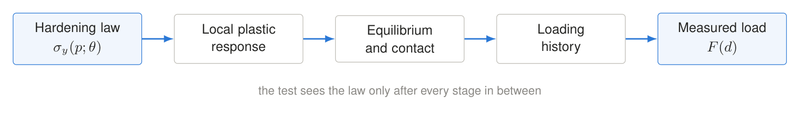
1 · J2 plasticity with combined hardening
Voce isotropic hardening grows the elastic domain; Armstrong–Frederick kinematic hardening moves it.
The backward-Euler return map reduces to one scalar equation for the plastic multiplier, solved inside
jax.lax.custom_root, so the consistent tangent is a single jax.jacfwd. It matches
the textbook closed form to round-off.
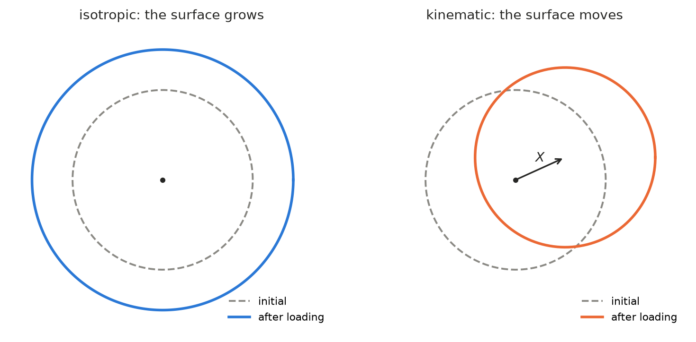
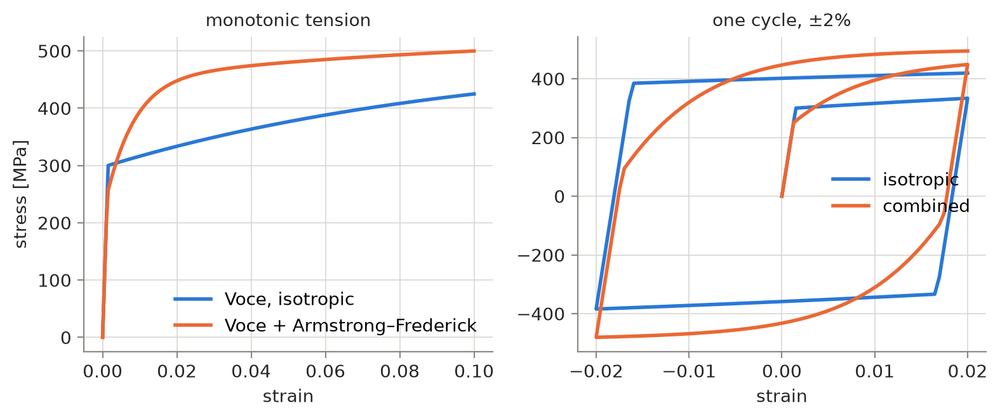
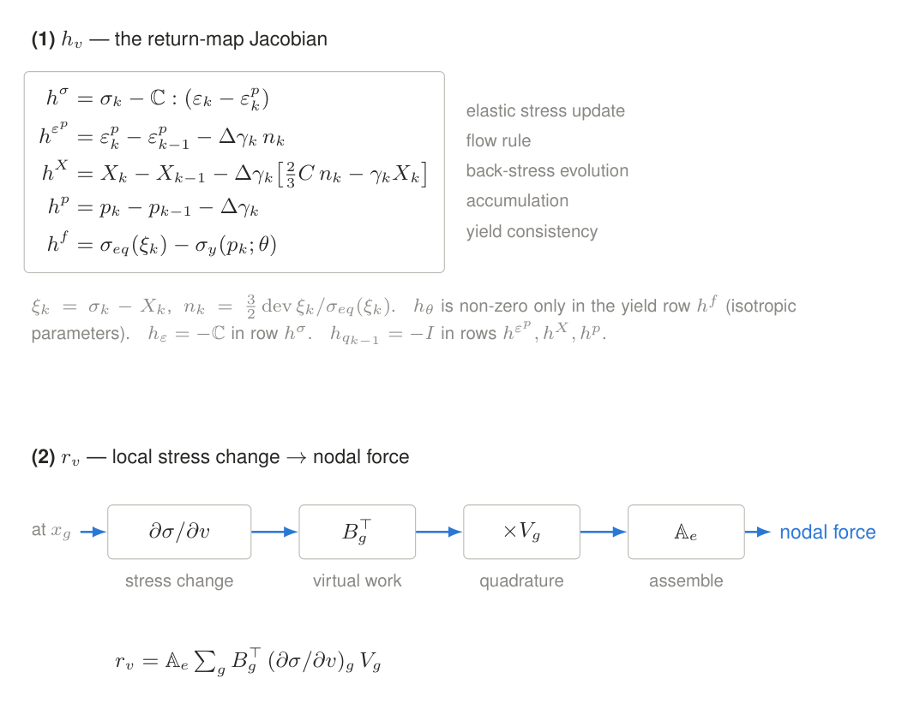
2 · The forward solve
Three residuals are coupled per increment: the local constitutive residual at every Gauss point, global equilibrium, and contact. Condensing the local solve gives the consistent tangent K = rU − rv hv−1 hU, the material's response to nodal motion.
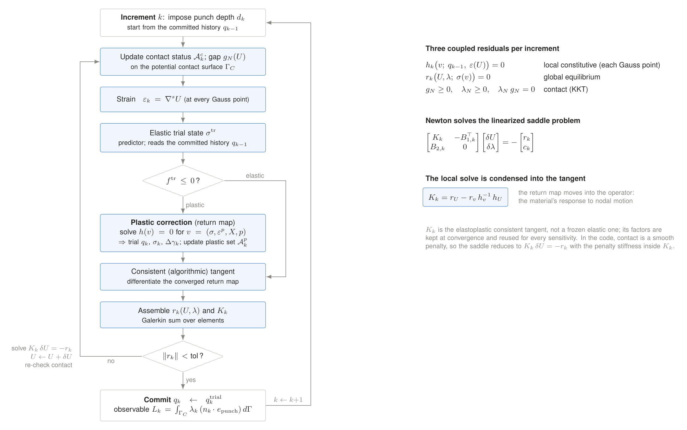
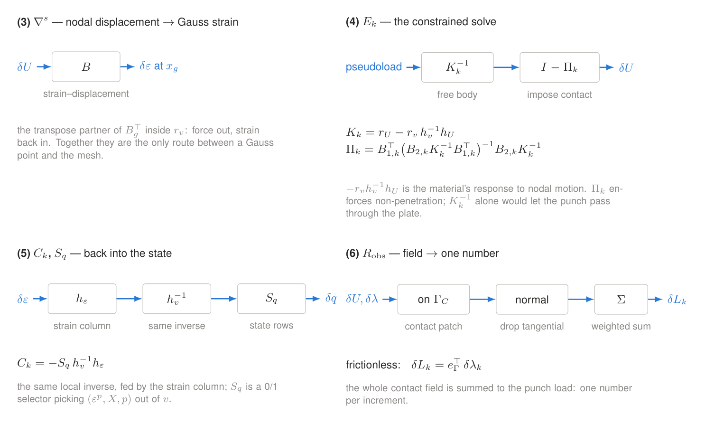
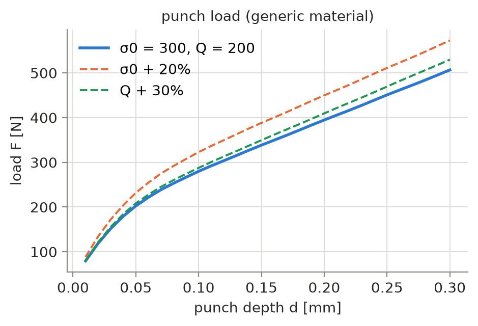
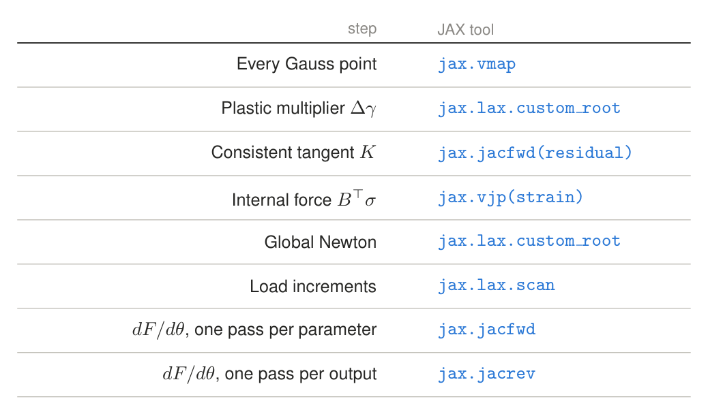
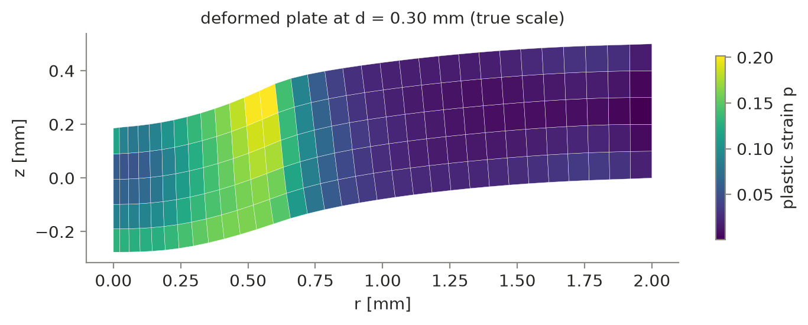
3 · How a parameter change travels
A parameter enters only through the yield row at the plastic strain reached. It is resisted by the local block, redistributed by the same factorized tangent (one extra right-hand side), carried to later increments through the committed state, and read out as a load change.
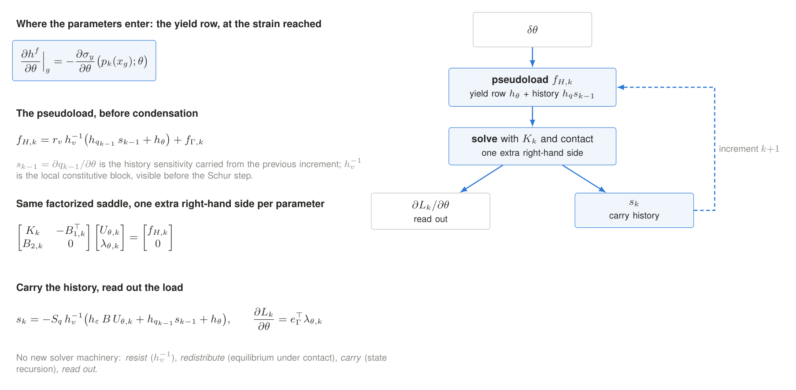
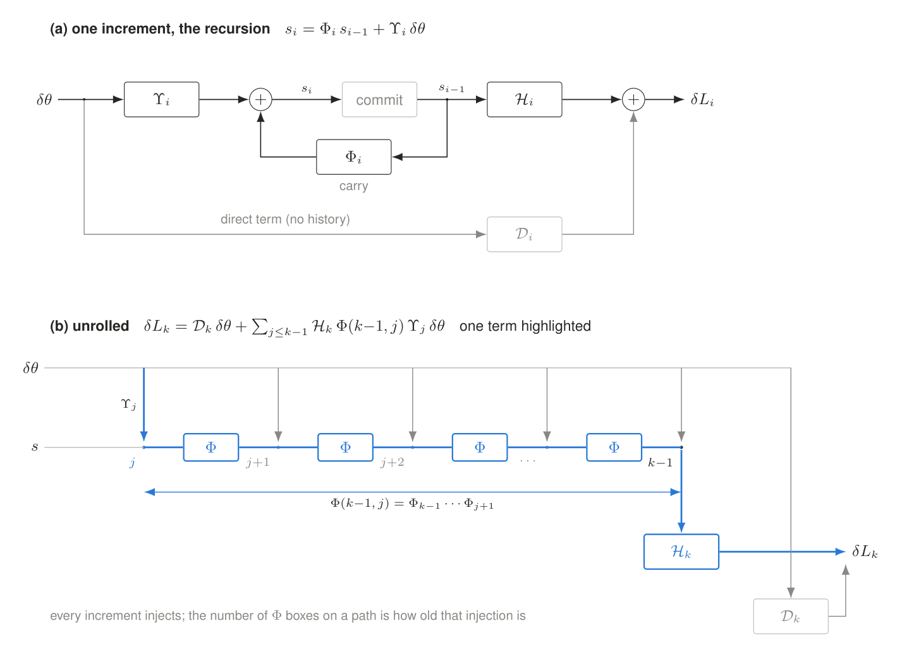
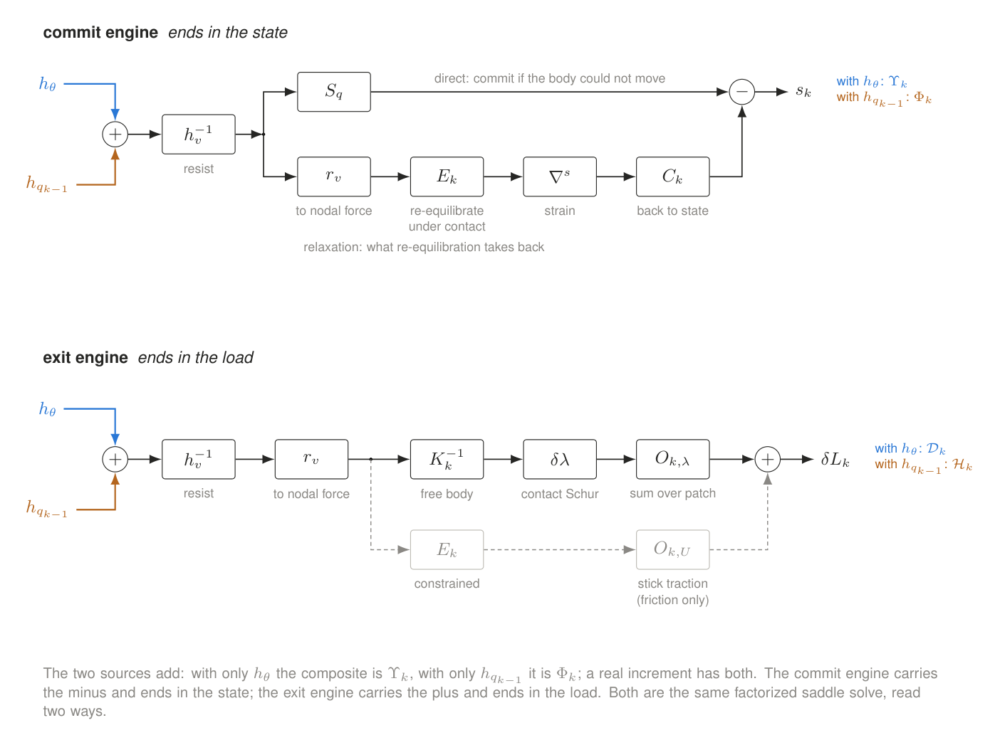
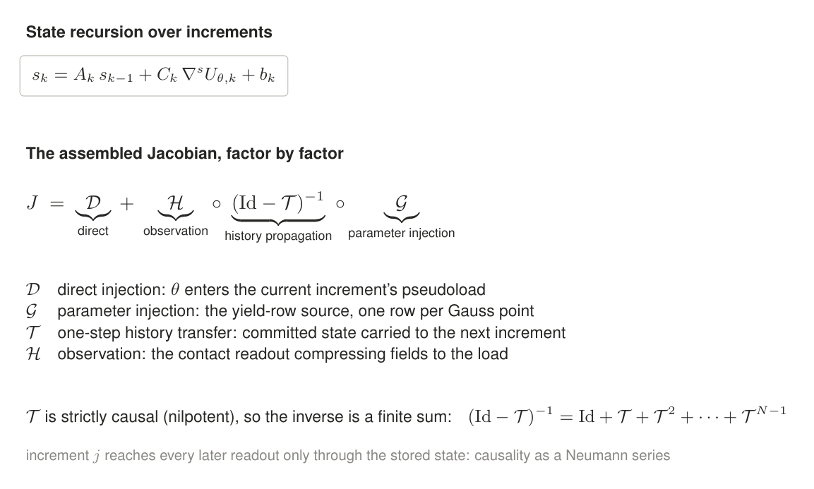
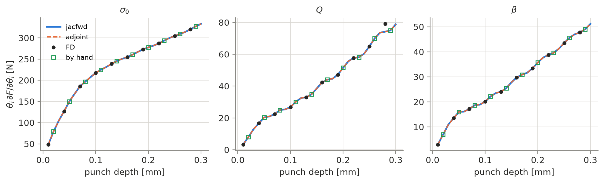
4 · A local Bayesian view with three parameters
Around one anchor, the data add precision Γ = JTΣ−1J. Its eigenvectors are the combinations of (σ0, Q, β) that a test pins down or leaves loose; along mode i the posterior variance shrinks by 1/(1+λi).
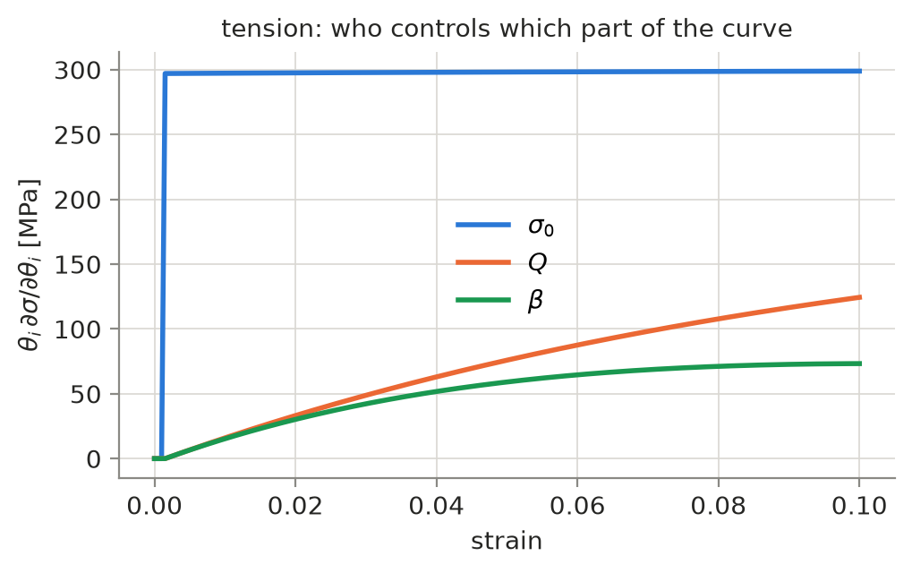
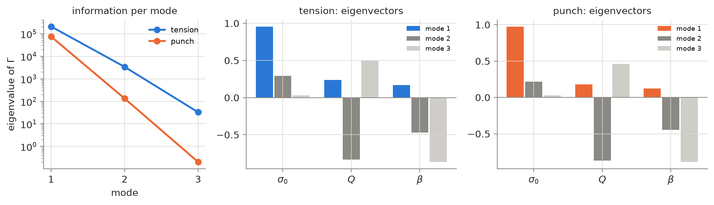
Where this leads
The same machinery can ask where in plastic-strain space, at each depth, the punch load is sensitive to the hardening law at all. A first look, work in progress:
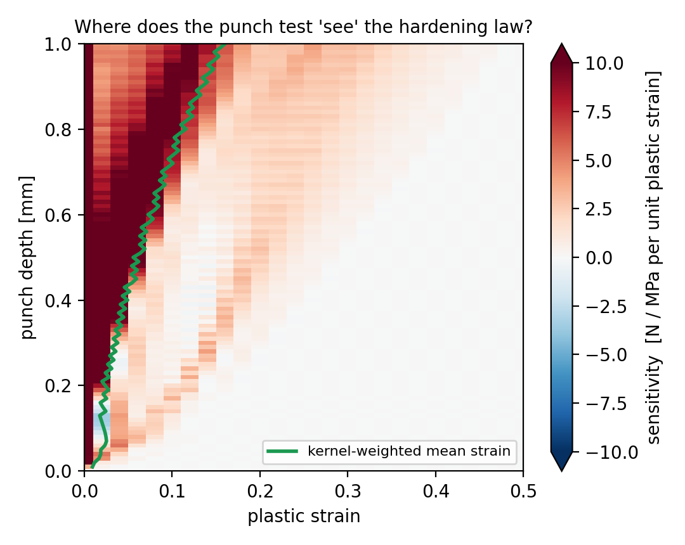
Generic material and geometry, small-strain teaching model built on core JAX. This page shares the write-up and figures only.